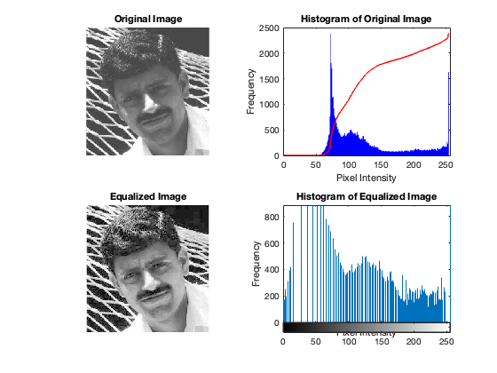

clear all;
close all;
clc;
image = imread('human_img.jpeg');
if size(image, 3) == 3
image = rgb2gray(image);
end
histogram = zeros(1, 256);
[rows, cols] = size(image);
for ii = 1:rows
for jj = 1:cols
intensity = image(ii, jj);
histogram(intensity + 1) = histogram(intensity + 1) + 1;
end
end
cdf = cumsum(histogram);
cdf_min = min(cdf);
cdf_max = max(cdf);
h_v = round((cdf - cdf_min) / (cdf_max - cdf_min) * 255);
equalized_image = zeros(size(image), 'uint8');
for ii = 1:rows
for jj = 1:cols
intensity = image(ii, jj);
equalized_image(ii, jj) = h_v(intensity + 1);
end
end
figure;
subplot(2, 2, 1);
imshow(image);
title('Original Image');
subplot(2, 2, 2);
bar(0:255, histogram, 'BarWidth', 1, 'FaceColor', 'b');
hold on;
normalized_cdf = cdf / max(cdf) * max(histogram);
plot(0:255, normalized_cdf, 'r', 'LineWidth', 1.5);
hold off;
xlabel('Pixel Intensity');
ylabel('Frequency');
title('Histogram of Original Image');
subplot(2, 2, 3);
imshow(equalized_image);
title('Equalized Image');
subplot(2, 2, 4);
imhist(equalized_image);
title('Histogram of Equalized Image');
xlabel('Pixel Intensity');
ylabel('Frequency');
